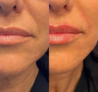
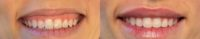
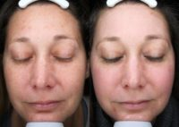

The Schwartz Aesthetic Institute & Spa in Westlake Village, California
Name: The Schwartz Aesthetic Institute & Spa
Display name: The Schwartz Aesthetic Institute & Spa
Mission: A nationally recognized breast, body and facial plastic surgeon, Dr. Michael R. Schwartz combines artistry, science and over seventeen years of experience to obtain impeccable results for his patients in his Westlake Village office.
Distinguished by his vast expertise, commitment to perfection and exceptionally natural results, Dr. Schwartz is known for his ability to deliver the exquisite cosmetic outcomes his patients desire.
Website: https://www.drschwartz.com
Office hours: Mon: 9:00am – 5:00pm
Tue: 9:00am – 5:00pm
Wed: 9:00am – 5:00pm
Thu: 9:00am – 5:00pm
Fri: 9:00am – 5:00pm
Phone: (805) 954-3097
Twilio phone: (805) 954-3097
Address: 4373 Park Terrace Dr., Ste. 101, Westlake Village, California, USA, 91361
City: Westlake Village
State: California
Country code: US
Postal code: 91361
Phone: (805) 706-0742
Country: USA
GPS coordinates on map: 34.1443202,-118.8032333
Treatments:
- ActiveFX
- Arm Lift
- Body Lift
- Botox
- Breast Augmentation
- Breast Implant Removal
- Breast Implant Revision
- Breast Implants
- Breast Lift
- Breast Lift with Implants
- Breast Reconstruction
- Breast Reduction
- Brow Lift
- Butt Augmentation
- Chin Implant
- Chin Liposuction
- DeepFX
- Dermabrasion
- Dysport
- Earlobe Repair
- Ear Surgery
- Eyelid Surgery
- Facelift
- Facial Fat Transfer
- Forma
- Gynecomastia Surgery
- Juvederm
- Labiaplasty
- Laser Resurfacing
- Lip Fillers
- Liposculpture
- Liposuction
- Lower Facelift
- Male Tummy Tuck
- Mini Facelift
- Mini Tummy Tuck
- Mommy Makeover
- Natrelle Breast Implants
- Neck Lift
- Nipple Surgery
- Nonsurgical Facelift
- Nonsurgical Nose Job
- Radiesse
- Renuva
- Restylane
- Retin-A
- Rhinoplasty
- Sclerotherapy
- Sientra Breast Implants
- Skin Rejuvenation
- SMAS Facelift
- Thigh Lift
- TotalFX
- Tumescent Liposuction
- Tummy Tuck
- Tummy Tuck Revision
- Dermal Fillers
- Facial
- Votiva
- Microneedling
- Ultherapy
- Biocorneum
- Chemical Peel
- Diastasis Recti Repair
- Hand Rejuvenation
- Microneedling RF
- Vaginal Rejuvenation
- Dermaplaning
- Halo Laser
- Laser Peel
- LED Light Therapy
- Liquid Facelift
- Microdermabrasion
- Micro Botox
- Restylane Lyft
- Restylane Defyne
- Restylane Refyne
- Sculptra
- Voluma
- Vollure
- Volbella
- Latisse
- Botox for Gummy Smile
- SkinPen
- Exo-Xom
- Ozempic for Weight Loss
- BodyTite
- FaceTite
- Morpheus8
- Thread Lift
RealSelf Info
Profile created: May 10, 2019
Profile modified: Aug 31, 2023
Business type: Practice
Review count: 99
Rating: 4.9
Rating time spent: 5
Rating answered questions: 5
Rating bedside manner: 5
Rating after care: 5
Rating payment process: 5
Rating wait times: 5
Rating courtesy: 5
Rating responsiveness: 5
RealSelf’s PRO: Yes
Realself network status: candidate
Special Offers
Heading
Start Time / End Time
Detail
Treatments
10% off MRS Super-C Serum – now through June!
May 29, 2019 /
Jun 30, 2019
10% off MRS Super-C Serum – now through June!
Super C Serum:
Provides tons of antioxidant benefits improving elasticity and plumping skin.
Minimizes fine lines and wrinkles while assisting in diminishing brown spots.
Protects against damaging free radicals induced by UVA, UVB and infrared radiation.
Increases skin luminosity and overall glow.
Any treatment
Doctors
Name: Michael R. Schwartz, MD
Statement: Double board certified in plastic surgery and general surgery. National educator, author and speaker.
Began aesthetic medicine in: 1998
Rating: 4.9
Name: Jen Stark, DO
Statement: Dr. Jen Stark, DO is a board-certified Plastic & Reconstructive surgeon located in Los Angeles
Dr. Stark was inspired to become a plastic surgeon at a young age when she met a man with a congenital deformity and saw how it affected his life and self-esteem. Since that moment, she aspired to dedicate her life to help instill confidence in others through Plastic and Reconstructive surgery.
Dr. Stark was influenced by her background in art to pursue plastic surgery. She is a classically trained artist in drawing, painting, and sculpting. It was apparent that plastic surgery is the perfect marriage between her passions for art and medicine. She provides all aesthetic plastic surgical and non-surgical procedures.
She takes pride on practicing as an ethical surgeon and meticulous perfectionist. With Dr. Stark, you will have an individualized comprehensive approach from a woman’s perspective with an artist’s touch.
Began aesthetic medicine in: 2013
Rating: 5.0
Staff
Name: Erin FNP-C
Position: Nurse Practitioner
Can answer: 1
Years experience: 8
Biography: Erin graduated with her Associates in Nursing from St Katherine University in her home town of Minneapolis, MN in 2011. She then went on to graduate Summa Cum Laude from Walden University with her Bachelors in Nursing specializing as a Family Nurse Practitioner. She has worked in the Aesthetic field for over seven years running Lasers and Ultherapy and has achieved the distinction of Master Injector from Allergen in 2017. She enjoys continually learning and stays ahead of the trends by investing her time in attending conferences and shadowing top providers in the industry. Erin has a gentle approach driven by a passion for what she does.
Name: Cheryl Registered Nurse
Position: Nurse Injector
Biography: Cheryl is a clinical educator and Allergan trainer, teaching physicians and nurses in basic and advanced injectable dermal fillers, Botox and Dysport. Her artistic eye and vast expertise make her one of the most elite and sought after aesthetic specialists in her field.
Name: Tanya Mettler
Position: Registered Nurse
Years experience: 3
Biography: Tanya graduated with her Bachelors in Science, Nursing from Azusa Pacific University in Southern California. She has worked in the Aesthetic field for almost 5 years, mastering many different techniques in injecting, neuromodulators, as well as laser treatments and IV therapy. Tanya’s Oncology nursing background adds to her strength in her IV skills making each client’s experience as pleasant and pain free as possible. Currently, Tanya is working towards her CANS (certified aesthetic nurse specialist) certificate and enjoys researching and learning about new trends and products in the aesthetic industry.
Name: Jamie Fishman
Position: Aesthetician
Years experience: 8
Biography: Jamie brings us her extensive experience in medical esthetics and dermatological skincare. After earning her Bachelor’s Degree in Psychology, Jamie Fishman pursued her love of skincare, science and beauty. Having 18 years of experience with some of LA’s top dermatologists, she is able to curate personal preventative skin treatment plans to address a multitude of concerns such as acne, teen acne, pigmentation, texture, tone and overall skin health. Her approach to skin treatments encompasses both the mind and body and is based on the individual needs of the client.
Practice's answers
Question
Answer Header & Date
Answer Snippet
Facelift and Lip Lift: Are these two procedures ever done at the same time?
Face and lip Lift
Oct 5, 2019
Yes, the two procedures are often combined together. Patients with jowl and neck skin laxity often have a loss of skin quality around the mouth as well. This can appear as a long or "horsey" upper lip. A lip lift done conservatively can significantly improve this. In addition, laser resurfacing with either the CO2 or Erbium laser can tighten and shorten the upper lip if your lip shape isn't ideal for a lift.
Will my hairline be changed by having a facelift incision that extends high into the temple are
Hairline changes with facelift
Oct 5, 2019
Thank you for your question. The hairline will always have some changes with a facelift. In the sideburn area, the goal is to avoid moving the sideburn so far that it appears abnormal. This can be done in two ways. First, in patients with a strong sideburn, the incision is made behind it. Even though it will shift a bit, the scar is hidden and the sideburn still looks normal. In patients with a weak or strong sideburn, or in patients who have had a...
Is this just swelling or faulty injection of Restylane?
Restylane Undereye Filler Swelling
Jun 5, 2019
Swelling under eyes after tear trough injection can take days to go down. This area in specific has a tendency to retain fluid, and when adding HA filler, which is attracted to water (hyrophilic- meaning liking water), tends to swell more and persist. I always advise patients to wait a full two weeks and if anything is of concern at that time to be seen by your injector.
Thoughtfully,
Erin Hewitt FNP-C
When getting under eye injections is feeling your nerves tingle normal?
Nerve Tingle after Undereye Injection
Jun 5, 2019
Tear trough injection is complicated , and requires expert knowledge of the anatomy. Near the tear trough lies the infraorbital foramen, this is essentially a tiny hole from which nerves and blood supply arise. It communicates the infraorbital nerve, which is a branch of the trigeminal nerve. The infraorbital nerve has sensory branches to the maxillary sinus and upper teeth. This is most likely why the provider asked if you felt anything in your teeth/mouth to let...
How many syringes of juvederm will I need for my naturally thin lips?
Lip Filler
Jun 5, 2019
Every patient is different and will require varying amounts of product to achieve their desired outcomes. I always recommend starting with one syringe. If you were pleased with your outcome but desire more volume you can always add more usually any time after 2 weeks from last injection. A slow approach to building volume can provide natural and beautiful results. I recommend seeing a experienced injection expert, medically certified by the State you seek treatment in, who preforms...
Latest Before And After Photos
-

-
Dr. The Schwartz Aesthetic Institute & Spa 30 Year Old Lady Treated With Injectable Fillers
-

-
Dr. The Schwartz Aesthetic Institute & Spa 29 Year Old Mrs. Treated With Lip Augmentation
-

-
Dr The Schwartz Aesthetic Institute & Spa 42 Year Old Mrs. Treated With Halo Laser Picture
Last updated on 12/03/2023